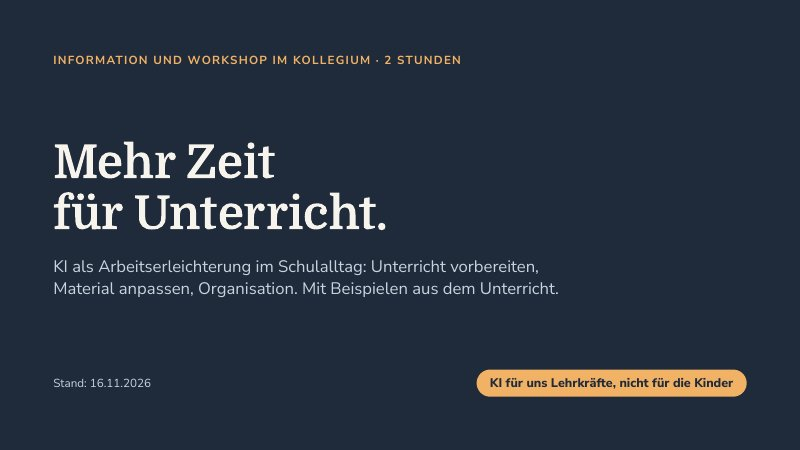
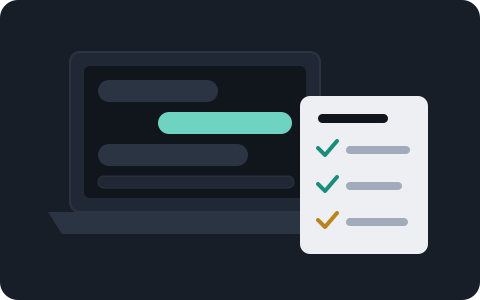
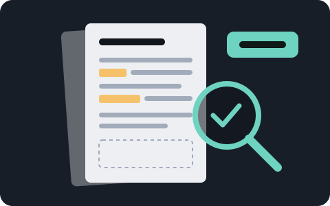

Differenzieren
Ein Arbeitsblatt in einer Support- und einer Challenge-Fassung.
KI-Werkstatt fürs Kollegium: Ihr bringt Material oder Stichpunkte mit, die KI macht einen ersten Entwurf, ihr prüft und passt an.
KI für uns Lehrkräfte, nicht für die Kinder. Offene KI-Modelle sind für Kinder tabu, und KI korrigiert oder bewertet keine Kinderarbeiten. Die Kinder bekommen nur fertiges Material, das wir geprüft haben.
Was KI uns Lehrkräften abnehmen kann, an Beispielen aus dem Unterricht.

Werkzeug wählen, die Regeln kennen und eigenes Material bereitlegen.

Für heute reichen die kostenlosen Versionen. Sie sind im Vergleich zu den Bezahlversionen aber eingeschränkt, zum Beispiel bei der Zahl der Nachrichten und bei einzelnen Funktionen. Kein Konto? Zu zweit arbeiten.
Wählt einen Weg, kopiert den Prompt und ersetzt die gelb markierten Stellen. Material wählen 5, bauen 40, prüfen 15 Minuten.

Ein Arbeitsblatt in einer Support- und einer Challenge-Fassung.
Test mit Erwartungshorizont zu einer laufenden Reihe. Korrigieren und bewerten tut ihr selbst.
Kurzentwurf auf einer Seite, mit dem alle die Stunde halten können.
Für Mutige: ein Quiz oder Zuordnungsspiel im Canvas (Gemini, ChatGPT) oder als Artefakt (Claude).
Aus Stichpunkten ein kurzer Brief in einfacher Sprache.
Leerer Bogen für eine Reihe. Namen und Beobachtungen tragt ihr selbst ein.
Antippen kopiert den Satz, dann im selben Chat einfügen.
Wer mag, stellt das eigene Ergebnis zwei bis drei Minuten an der digitalen Tafel vor. Abgelegt werden muss nichts.
Auf dem Bildschirm keine Daten von Kindern.
Regeln und Vorlagen in einem Gem (Gemini) oder Projekt (ChatGPT, Claude) hinterlegen. Am Ende jedes Chats „Stand sichern“, dann kennt die KI beim nächsten Mal eure Reihen und offenen Punkte.
Selbst gebaute Übungen dauerhaft online stellen, z. B. über GitHub Pages. Dann gilt:
Keine Rechtsberatung. Wer es ausprobieren möchte, spricht mich an.